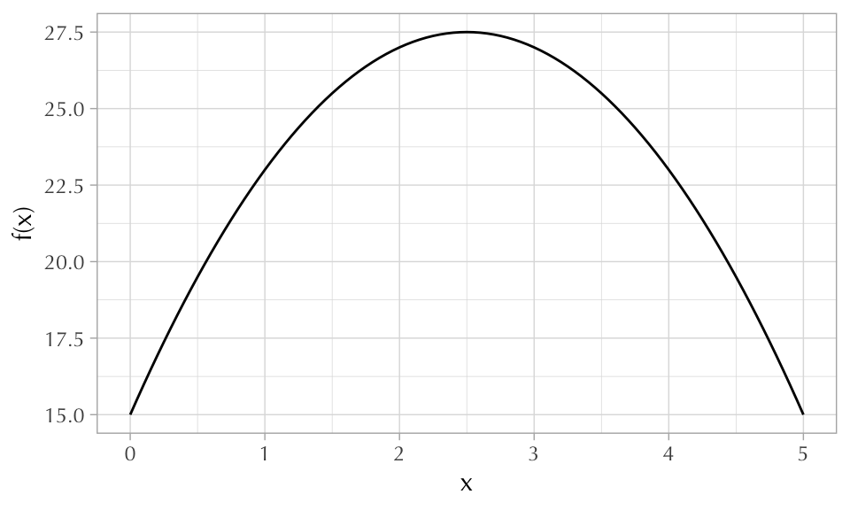
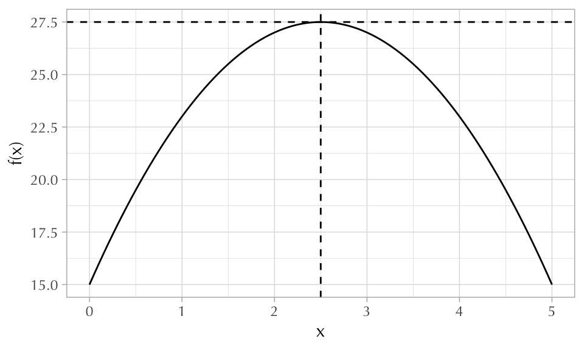

Code
parabola <- function(x) 15 + 10*x - 2*x^2 A few different ways to do optimization.
andrés castro araújo
January 24, 2021
Finding the peak of parabola
\[y = 15 + 10x - 2x^2\]
First we write this statement as an R function.
Then we can visualize it using curve() or ggplot2.

Then we call optimize(), which takes the function as its first argument, the interval as its second, and an optional argument indicating whether or not you are searching for the function’s maximum (minimize is the default).
$maximum
[1] 2.5
$objective
[1] 27.5
There are many more ways of using optimization in R. For example, if you want to find the maximum of a function with many parameters you can use optim().
$par
[1] 2.5
$value
[1] 27.5
$counts
function gradient
6 3
$convergence
[1] 0
$message
NULLIn statistics we usually try to find the maximum of likelihood functions in order to fit regression models.
For example1, a simple logistic regression can be fit by doing the following:
'data.frame': 3020 obs. of 5 variables:
$ switch : int 1 1 0 1 1 1 1 1 1 1 ...
$ arsenic: num 2.36 0.71 2.07 1.15 1.1 3.9 2.97 3.24 3.28 2.52 ...
$ dist : num 16.8 47.3 21 21.5 40.9 ...
$ assoc : int 0 0 0 0 1 1 1 0 1 1 ...
$ educ : int 0 0 10 12 14 9 4 10 0 0 ...[1] 3020 4## The outcome variable
y <- wells$switch
## The log-likelihood function
log_likelihood <- function(beta, outcome, dmat) {
linpred <- dmat %*% beta ## the linear predictor
p <- plogis(linpred) ## the link function
sum(dbinom(outcome, size = 1, prob = p, log = TRUE)) ## the log-likelihood
}
## The maximum likelihood estimate (MLE)
opt <- optim(
par = rep(0, ncol(X)), ## initial values are all 0's
fn = log_likelihood, method = "BFGS",
outcome = y, dmat = X,
# this next line is critical:
# it tells R to maximize rather than minimize
control = list(fnscale = -1)
)
names(opt$par) <- colnames(X)
opt$par (Intercept) dist arsenic dist:arsenic
-0.147139626 -0.005811349 0.555574583 -0.001768792 We can compare this to the outcome given by R’s glm() function:
Users of Stan should know that it can be used for optimization as well.
parameters {
real<lower=0> x; // easily does constrained optimization
}
model {
target += 15 + 10*x - 2*x^2;
}Initial log joint probability = 17.7521
Iter log prob ||dx|| ||grad|| alpha alpha0 # evals Notes
4 27.5 0.00019008 2.86238e-06 1 1 12
Optimization terminated normally:
Convergence detected: relative gradient magnitude is below tolerance
Finished in 0.3 seconds. variable estimate
lp__ 27.50
x 2.50The data: «A survey of 3020 residents in a small area of Bangladesh suffering from arsenic contamination of groundwater. Respondents with elevated arsenic levels in their wells had been encouraged to switch their water source to a safe public or private well in the nearby area and the survey was conducted several years later to learn which of the affected residents had switched wells»↩︎